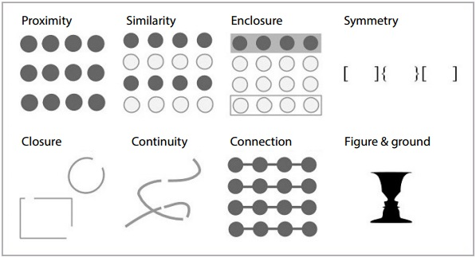

Data Visualization
Using ggplot2
PERCEPTION
Why are some plots easier to read than others?
What makes bad figures bad?
- issues can be (1) aesthetic, (2) substantive, and/or (3) perceptual
We have now learned about how to create a graphic, but how do we know if we are creating a “good” graphic? A chart is good if it allows the user to draw useful conclusions that are supported by data. Aesthetics choices, substantive content, or perceptual biases may affect the clarity of plots.
Why are some plots easier to read than others?
What makes bad figures bad?
issues can be (1) aesthetic, (2) substantive, and/or (3) perceptual
Edward R. Tufte is a better known critic of this style of visualization
Graphical excellence is the well-designed presentation of interesting data and consists of:
complex ideas communicated with clarity, precision, and efficiency
maximizes the “data-to-ink” ratio.
nearly always multivariate
requires telling the truth about the data.
defines “chartjunk” as superfluous details
In learning how to create a graphic, we have seen there are many decisions we make when designing a graphic: the type of chart, colors, shapes, scales, etc. These aesthetic design choices we make can impact the way the chart is read. Edward Tufte has publically been a critic of chart design advocating for the most simplistic chart to minimize “chartjunk”. While chartjunk is not entirely devoid of merit, bear in mind that ease of recall is only one virtue amongst many for graphics.
Why are some plots easier to read than others?
What makes bad figures bad?
issues can be (1) aesthetic, (2) substantive, and/or (3) perceptual
bad data
A good graphic can’t fix bad data. Recall that we create graphics by mapping the variables in the data set to attributes on the chart, what is in the data set shows up in the figure.
Why are some plots easier to read than others?
What makes bad figures bad?
issues can be (1) aesthetic, (2) substantive, and/or (3) perceptual
Looking at pictures of data means looking at lines, shapes, and colors
Our visual system works in a way that makes some things easier for us to see than others
“Preattentive” features
Gestalt Principles
color and contrast
When interpreting a graphic, we are visually observing different features of the figure. While our visual system is amazing, it is not always as accurate as the computers we use to render graphics. We have physical limits in the number of colors we can perceive, our short term memory, attention, and our ability to accurately read information off of charts in different forms. We will discuss how an understanding of preattentive features and the gestalt principles can help us make decisions about how to display our data in order to reduce the cognitive load necessary to interpret a plot.
Good Graphics
Graphics consist of:
Structure: boxplot, scatterplot, etc.
Aesthetics: features such as color, shape, and size that map other characteristics to structural features
Both the structure and aesthetics should help viewers interpret the information.
Gestalt Principles
What sorts of relationships are inferred, and under what circumstances?
Which has more structure?
We look for structure all the time. We are so good at it that we will find it in random data, given time. (This is one of the reasons that data visualization can hardly be a replacement for statistical modeling.) The strong inferences we make about relationships between visual elements from relatively sparse visual information are called “gestalt rules”. They are not pure perceptual effects, like the checkerboard illusions. Rather, they describe our tendency to infer relationships between the objects we are looking at in a way that goes beyond what is strictly visible.
Gestalt principles

gestalt = form or pattern Gestalt philosophy: the whole is greater than the sum of the parts
Gestalt principles: Predictable ways by which we organize sensory information.
Gestalt principles
What sorts of relationships are inferred, and under what circumstances?
Proximity: Things that are spatially near to one another are related.
Similarity: Things that look alike are related.
Enlosure: A group of related elements are surrounded with a visual element
Symmetry: If an object is asymmetrical, the viewer will waste time trying to find the problem instead of concentrating on the instruction.
Closure: Incomplete shapes are perceived as complete.
Continuity: Partially hidden objects are completed into familiar shapes.
Connection: Things that are visually tied to one another are related.
Figure/Ground: Visual elements are either in the foreground or the background.
Gestalt principles
| Gestalt Hierarchy | Graphs |
|---|---|
| Enclosure | Facets |
| Connection | Lines |
| Proximitiy | White Space |
| Similarity | Color/Shape |
Implications for practice + Know how we perceive groups + Know that we perceive some groups before others + Design to facilitate and emphasize the most important comparisons
Gestalt Principles: Case Study
swimming <- read.csv("https://raw.githubusercontent.com/unl-statistics/R-workshops/main/r-graphics/data/gestalt-swimming.csv") Location WaterTemp Time AvgTemp
cheek:6 indoor :12 pre :8 Min. :48.60
elbow:6 outdoor:12 post1:8 1st Qu.:67.67
palm :6 post2:8 Median :84.25
pec :6 Mean :78.70
3rd Qu.:89.83
Max. :95.40 Gestalt Principles: Case Study
Research question: Does the average body temperature recovery as recorded at the four body points depend on water temperature?

Gestalt Principles: Case Study

Gestalt Principles: Case Study
Research question: Does the average body temperature recovery as recorded at the four body points depend on water temperature?


Pre-Attentive Features
Pre-Attentive Features

how quickly did you spot the circle?
Pre-Attentive Features

Did you spot the green point quicker than the circle in the previous image?
Pre-Attentive Features
Pre-Attentive Features are things that “jump out” in less than 250 ms
- Color, form, movement, spatial localization
There is a hierarchy of features
Color is stronger than shape
Combinations of pre-attentive features are usually not pre-attentive due to interference
Pre-attentive Features

Pre-attentive Features

Color
Hue: shade of color (red, orange, yellow…)
Intensity: amount of color
Both color and hue are pre-attentive. Bigger contrast corresponds to faster detection.
Use color to your advantage
When choosing color schemes, we will want mappings from data to color that are not just numerically but also perceptually uniform
Distinguish between sequential scales and categorical scales
Color
Our eyes are optimized for perceiving the yellow/green region of the color spectrum.

Our eyes are optimized for perceiving the yellow/green region of the color spectrum. Why? Well, our sun produces yellow light, and plants tend to be green. It’s pretty important to be able to distinguish different shades of green (evolutionarily speaking) because it impacts your ability to feed yourself. There aren’t that many purple or blue predators, so there is less selection pressure to improve perception of that part of the visual spectrum.
Color blindness
Not everyone perceives color in the same way. Some individuals have colorblindness or color deficiencies.
You can take a test designed to screen for colorblindness here.

Context
Color is context-sensitive: A and B are the same intensity and hue, but appear to be different.

In addition to colorblindness, there are other factors than the actual color value which are important in how we experience color, such as context.
Our brains are extremely dependent on context and make excellent use of the large amounts of experience we have with the real world. As a result, we implicitly “remove” the effect of things like shadows as we make sense of the input to the visual system. This can result in odd things, like the checkerboard and shadow shown above - because we’re correcting for the shadow, B looks lighter than A even though when the context is removed they are clearly the same shade.
Color: Implications and Guidelines
Do not use rainbow color gradient schemes.
Avoid any scheme that uses green-yellow-red signaling if you have a target audience that may include colorblind people.
To “colorblind-proof” a graphic, you can use a couple of strategies:
- double encoding - where you use color, use another aesthetic (line type, shape)
- If you can print your chart out in black and white and still read it, it will be safe for colorblind users. This is the only foolproof way to do it!
- If you are using a color gradient, use a monochromatic color scheme where possible.
- If you have a bidirectional scale (e.g. showing positive and negative values), the safest scheme to use is purple - white - orange. In any color scale that is multi-hue, it is important to transition through white, instead of from one color to another directly.
Be conscious of what certain colors “mean”
Do not use rainbow color gradient schemes - because of the unequal perception of different wavelengths, these schemes are misleading - the color distance does not match the perceptual distance.
Avoid any scheme that uses green-yellow-red signaling if you have a target audience that may include colorblind people.
To “colorblind-proof” a graphic, you can use a couple of strategies:
- double encoding - where you use color, use another aesthetic (line type, shape) as well to help your colorblind readers out
- If you can print your chart out in black and white and still read it, it will be safe for colorblind users. This is the only foolproof way to do it!
- If you are using a color gradient, use a monochromatic color scheme where possible. This is perceived as light -> dark by colorblind people, so it will be correctly perceived no matter what color you use.
- If you have a bidirectional scale (e.g. showing positive and negative values), the safest scheme to use is purple - white - orange. In any color scale that is multi-hue, it is important to transition through white, instead of from one color to another directly.
Be conscious of what certain colors “mean”
- Leveraging common associations can make it easier to read a color scale and remember what it stands for (e.g. blue for cold, orange/red for hot is a natural scale, red = Republican and blue = Democrat in the US, white -> blue gradients for showing rainfall totals)
- Some colors can can provoke emotional responses that may not be desirable.
- It is also important to be conscious of the social baggage that certain color schemes may have - the pink/blue color scheme often used to denote gender can be unnecessarily polarizing, and it may be easier to use a colder color (blue or purple) for men and a warmer color (yellow, orange, lighter green) for women.
There are packages such as
RColorBreweranddichromatthat have color palettes which are aesthetically pleasing, and, in many cases, colorblind friendly (dichromatis better for that thanRColorBrewer). You can also take a look at other ways to find nice color palettes.
Ordering Variables
Which is bigger?
- Position: higher is bigger (y), items to the right are bigger (x)
- Size, Area
- Color: not always ordered. More contrast = bigger.
- Shape: Unordered.

Aesthetics in ggplot2
Aesthetics in ggplot2
Aesthetics: features such as color, shape, and size that map other characteristics to structural features

Aesthetics in ggplot2
Scales map data values to the visual values of an aesthetic
- to change a mapping, add a new scale

Scales


Gradients
Qualitative schemes: no more than 7 colors

Can use colorRampPalette() from the RColorBrewer package to produce larger palettes by interpolating existing ones

Quantitative schemes: use color gradient with only one hue for positive values

More Gradients
Quantitative schemes: use color gradient with two hues for positive and negative values. Gradient should go through a light, neutral color (white)

Small objects or thin lines need more contrast than larger areas
Factors vs. Continuous variables
- Factor variable:
scale_colour_discretescale_colour_brewer(palette = ...)
- Continuous variable:
scale_colour_gradient(define low, high values)scale_colour_gradient2(define low, mid, and high values)- Equivalents for fill:
scale_fill_...

Color in ggplot2
There are packages available for use that have color scheme options.
Some Examples:
- Rcolorbrewer
- ggsci
- viridis
- wes anderson
There are packages such as RColorBrewer and dichromat that have color palettes which are aesthetically pleasing, and, in many cases, colorblind friendly.
You can also take a look at other ways to find nice color palettes.
Color in ggplot2
- There are packages available for use that have color schemes options.

Your Turn
data(diamonds)In the
diamondsdata,clarityandcutare ordinal, whilepriceandcaratare continuous.Create a graphic that gives an overview of these four variables while respecting their types.
Discuss your graphic with a neighbor.
Your Turn
The movies data set contains information from IMDB.com including ratings, genre, length in minutes, and year of release.
movies <- read.csv("https://raw.githubusercontent.com/unl-statistics/R-workshops/main/r-graphics/data/MovieSummary.csv")Explore the differences in length, rating, etc. in movie genres over time.
Hint: use faceting!
Discuss your graphic with a neighbor.